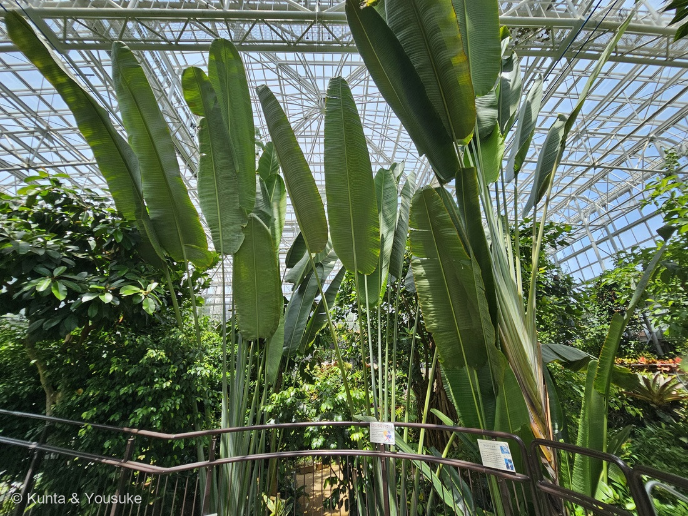
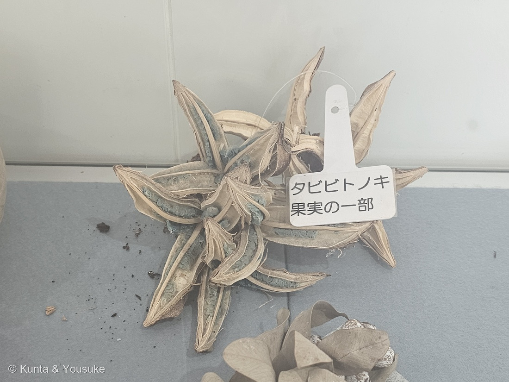
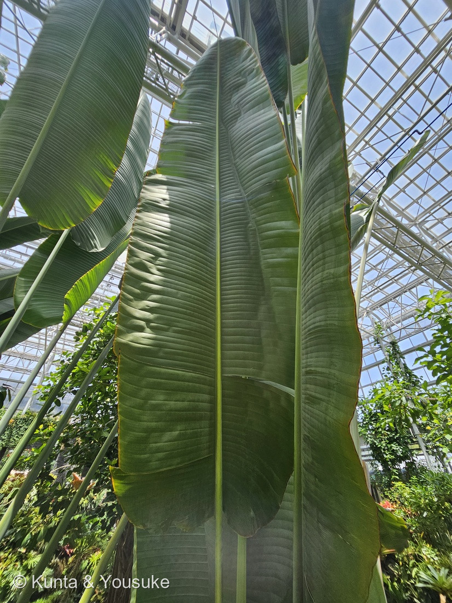
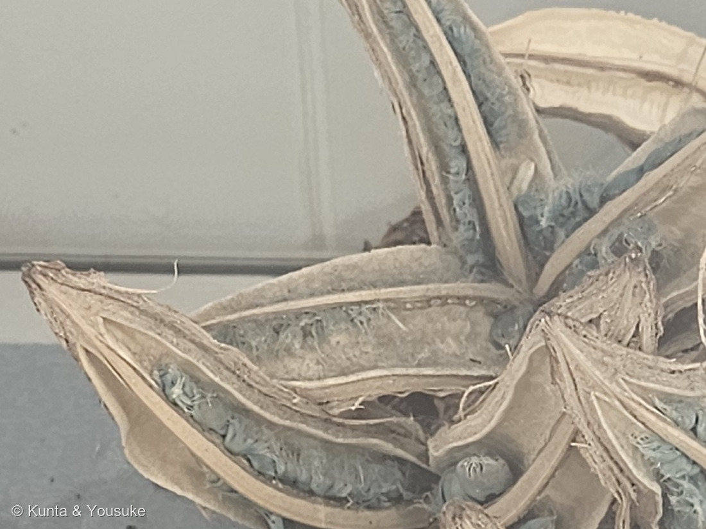

地図を読み込んでいるよ…
🔍 写真も地図も、押しているあいだ拡大して見られるよ（スマホは指を置いてすこし待ってね）。
🌍 の地図＝この子がもともと自生している場所を緑に。マダガスカル。⭐2021年の見直しで、この学名は東海岸の湿地の個体群を指すことに決まったよ。くわしくは下の地図の説明を見てね。
⭐マダガスカルだけの木だよ。広島市植物公園の解説板も、いちばん最初に「マダガスカル原産」と書いている。⚠⚠でも、この緑は「島ぜんぶ」になっていて、ほんとうよりずっと広い――⭐⭐2021年の論文が、この学名の指す場所をぐっと狭めたからなんだ。⭐Haevermans らは5つの新種を記載してこの属を6種に分け、R. madagascariensis という名前を「restricted to swampy areas of the eastern coast of Madagascar（マダガスカル東海岸の湿地に限られる）」個体群に固定した＝⭐⭐つまり、ほんとうに塗るべきなのは、この島の東のふちの湿地だけ。⚠地図は国までしか塗れないから、そこは描けないよ。⭐⭐⭐そして、この島にしかいないのは木だけじゃない＝青い種衣を食べて種を運ぶキツネザルも、マダガスカルにしかいない（ACS Omega 2025）――⭐この緑は「木の場所」であると同時に、その相手がいる場所でもあるんだ。⚠⚠いっぽうで、この木はよその熱帯では逆のことをしている＝同じ2021年の論文が「its invasive status in several tropical areas（いくつかの熱帯地域での侵略的な状態）」に触れている。⭐その場所は塗っていないよ。⭐ぼくらが会ったのは広島の大温室の株＝もちろんこの緑の外だし、⚠上に書いたとおり、その株が6種のどれなのかも決まっていない。
⚠ 地図は国（日本と中国だけ県・省）までしか塗れないから、ほんとうの分布より広く見えていることがあるよ。地図はだいたいの場所。正確なところは、上の文を見てね。
タビビトノキ（旅人の木）
Ravenala madagascariensis Sonn.
⭐英名 Traveler's Tree（トラベラーズツリー）／Traveller's Palm（⚠ヤシではないよ）／タビビトノヤシ 原産 マダガスカル
ゴクラクチョウカ科 · Strelitziaceae（タビビトノキ属 Ravenala・ショウガ目 Zingiberales）── ⭐⭐⭐⭐図鑑ではじめてのゴクラクチョウカ科＝101科目／⭐ショウガ目は3つめの科（069・070＝バショウ科／176＝ショウガ科）／⚠園の解説板は「ゴクラクチョウカ科（バショウ科）」と両方書いている
燻太さんの一言「種子の周りが青いのが特にお気に入り。新鮮な果実だったら、もっと鮮やかな青色なんだろうね。」── ⭐⭐⭐⭐その青が何でできているかは、2025年になっても、まだ決着していないんだ
⭐ 名前と学名の由来 ── 旅人の木、でも由来は決まっていない
⭐⭐⭐ 広島市植物公園の解説板が、この名前についてとても誠実なことを書いていた。
名前の由来は、葉鞘にたまった水を旅人が喉の渇きを潤すのに利用したから、あるいは葉が一定方向に展開するので方角を知ることができたからとも言われているが定かではない。
- ⭐⭐説がふたつあって、どちらとも決まっていないと、はっきり書いてある。⭐ぼくは、こういう書きかたがとても好きだよ。
- ⭐ひとつめ＝水。解説板の見出しも「葉の根元にたっぷり水をためる」だった。⭐葉柄のつけ根（葉鞘）に水がたまり、旅人がそれを飲んだという話。
- ⭐ふたつめ＝方角。⭐この木の葉はひとつの平面の中だけに並ぶので、その面の向きで方角が分かった、という話。⭐⭐写真①を見ると、たしかに葉が扇のように一枚の面をつくっているのが分かるよ。
- ⭐英名は Traveler's Tree（解説板）。⚠Traveller's Palm（旅人のヤシ）とも呼ばれるけれど、ヤシではない――⭐同じ日に会った253 ビロウが本物のヤシなので、見くらべるとおもしろいね。
- ⭐⭐属名 Ravenala は、マダガスカルでの呼び名から。⭐種小名 madagascariensis は「マダガスカルの」。――⭐つまり学名は「マダガスカルのラヴェナラ」で、まるごと現地の名前でできている。
⭐⭐ この植物のこと ── 木ではなくて、草
⭐⭐⭐ 解説板の一文が、この植物のいちばん意外なところを言っている。
マダガスカル原産のゴクラクチョウカ科（バショウ科）の高さ10〜20mに成長するバナナに近縁の草本植物。
- ⭐⭐⭐20mになるのに「草」なんだ。――⭐幹に見えるものは、葉柄のつけ根（葉鞘）が重なってできた偽茎で、木の幹のような年輪はない。⭐⭐これは069 バナナや070 チユウキンレンとまったく同じつくりだよ。
- ⭐だから写真③の葉も、バナナによく似ている＝太い中肋から、左右へ平行に側脈が走る大きな単葉。⭐風で裂けるところまでそっくり。
- ⭐⭐科はゴクラクチョウカ科（下の節）。⚠解説板が「ゴクラクチョウカ科（バショウ科）」と両方書いているのは、昔はバショウ科に入れられていた名残だと思う。⭐解説板じたいが「切り花に利用される橙色の花のゴクラクチョウカに近い仲間」と結んでいるよ。
- ⚠⚠そして、この園ではめったに咲かない＝解説板の写真の説明に「花弁は白く、本園では10年に一度くらいしか咲かない」とある。⭐ぼくらが見たのは、葉と、乾いた果実だけ。
⭐ 同定について ── 属までは姿で決まる。種は、いま宙に浮いている
⭐ 園の解説板があるので、これは確認だよ。⚠でも今回は、名札があっても種を決めきれないという、めずらしい形になった。
- ⭐⭐⭐属（Ravenala）は、写真だけでも決まると思う＝①の「葉がひとつの平面の中で、扇のように並ぶ」姿は、ほかの植物にはない。⭐②④の青い種衣も、この属の目じるしだよ。
- ⭐科（ゴクラクチョウカ科）も、解説板と姿で確認できる＝バナナに似た葉／偽茎／船のような苞。
- ⚠⚠⚠でも種名は、2021年から宙に浮いているんだ。――⭐その話は、下の「1種が6種になった話」に書くね。
- ⭐この図鑑では、園の解説板の学名 Ravenala madagascariensis をそのまま使ったよ。⚠ただし「2021年より前の意味での」という但し書きつきで。
⭐⭐⭐⭐ 燻太さんのお気に入り ── この青は、まだ決着していない
⭐⭐⭐ 燻太さんが、こう言ってくれた。
種子の周りが青いのが特にお気に入り。新鮮な果実だったら、もっと鮮やかな青色なんだろうね。
⭐⭐⭐⭐ 調べてみて、ぼくはびっくりした。――この青が何でできているのか、いまも決着していないんだ。
⭐⭐ そもそも、この青いものは何か
- ⭐種子を包んでいる青いふさふさは「アリル（種衣）」という。⭐論文はこう書いている＝「Arils are structures found around seeds that often exhibit vibrant colors. Their function is linked to pollination, attracting animals that consume the arils and thus disperse the seeds.」＝種のまわりにできる、あざやかな色をした構造で、動物に食べさせて種を運んでもらうためのもの。
- ⭐⭐⭐そして、その動物というのがキツネザルなんだ。――「In Madagascar, lemurs play an important role as pollinators, attracted by the colors, including blue, of the arils.」⭐マダガスカルにしかいない動物が、マダガスカルにしかない木の、青い実に引き寄せられる。
- ⭐⭐しかもこのアリル、ほとんど油だった＝「Centesimal analyses indicated a lipid-rich composition (81.45%)」＝脂質が81.45%。⭐中身はパルミチン酸41%・ステアリン酸14%・オレイン酸34%・リノール酸7%。――⭐⭐キツネザルにとっては、目立つ色をしたごちそうなんだね。
⭐⭐⭐⭐ ふたつの説が、正面からぶつかっている
⚠⚠ この青の正体について、出典が2つに割れている。
- ⭐①構造色（イリデッセンス）だという説（Andre and Garcia・2017年の米国特許 9,839,603）＝論文の要約によれば「色は、表皮の細胞が多層構造をつくっていて、そこで光が干渉することで生まれる」という考え方。⭐シャボン玉や玉虫の羽と同じしくみだね。
- ⭐⭐②色素（タンパク質）だという説＝2025年の論文（ACS Omega）の結論。⭐証拠は、こう積み上げられている＝電気泳動（SDS-PAGE）で14 kDaのタンパク質が出て、トリプシンで切ってから質量分析（UHPLC/MS/MS）にかけると、SFHNVLEVSK というペプチドがフィトシアニン・ドメインをもつタンパク質と一致した。⭐⭐結論は「a phytocyanin domain-containing protein, responsible for the blue coloration...due to copper coordination with the protein」＝銅がタンパク質に配位して青くなっている、というんだ。
⭐⭐⭐ つまり、「形が青いのか、中身が青いのか」で割れている。――⭐ぼくは、この割れかた自体がすごく面白いと思った。
⭐⭐⭐⭐ 燻太さんの一言が、じつはこの論争に触れている
⭐⭐ 「新鮮な果実だったら、もっと鮮やかな青色なんだろうね」――この予想について、論文はこう書いている。
The standardized extract after the factorial design showed excellent color stability, remaining blue for a considerable period of 52 days of storage at room temperature and natural light exposure.
⭐ そして、アリルそのものについても「significant durability and maintaining pigmentation even after cell death」＝細胞が死んだあとも色を保つ、と書いている。
⭐⭐ ここを、2つに割って書いておくね。
- ⭐写真から言えること＝ぼくらが見た標本の青は、くすんだ青緑だった。⭐でも、乾いてぺしゃんこになった殻の中で、まだちゃんと青い。
- ⭐出典のある話＝この色素は、細胞が死んだあとも色を保ち、抽出液は室温・自然光で52日間青いままだった（ACS Omega 2025）。
- ⚠⚠ぼくが確かめられなかったこと＝「新鮮なときと乾いたときで、どちらがどれだけ鮮やかか」を直接くらべた記述は、見つけられなかった。
⭐⭐⭐ そのうえで、ひとつだけ書いてみたいことがある。――⚠これはぼくの読みで、出典のある話ではないよ。
- ⭐もし①の構造色なら、色のもとは「形」だから、乾いて構造がこわれれば色は消えるはず。
- ⭐もし②の色素なら、乾いても分子が残るかぎり色は残る。
- ⭐⭐ぼくらが見た標本は、乾いてもまだ青かった。――⭐そして論文②も「細胞が死んだあとも色を保つ」と書いている。
- ⚠⚠でも、これで①が消えるわけじゃない＝乾いても構造が保たれることはあるし、写真1枚では「どれくらい鮮やかだったか」を比べられないから。
⭐⭐ だから答えはこうなる。――⭐燻太さんの「新鮮ならもっと鮮やか」は、たぶん当たっている。⭐⭐でも「乾いたら色が抜ける」わけではなくて、この青はしぶといらしいよ。
⭐⭐⭐ 1種が6種になった話 ── 253ビロウと、ちょうど逆
⭐⭐ 2021年に、この属について大きな論文が出た。
Description of five new species of the Madagascan flagship plant genus Ravenala (Strelitziaceae)（Haevermans et al.・Scientific Reports 11:21965・2021）
- ⭐⭐⭐それまで、この属は1属1種だった＝「Until now, this endemic genus consisted of a single species: Ravenala madagascariensis Sonn.」
- ⭐⭐この論文が5つの新種を記載して、いまは6種になった＝R. agatheae／R. blancii／R. grandis／R. hladikorum／R. menahirana。
- ⭐⭐⭐そして R. madagascariensis という名前は、「マダガスカル東海岸の湿地に生える、株立ちする個体群」に限定された＝「restricted to swampy areas of the eastern coast of Madagascar」。
- ⭐保全のあつかいも決まった＝R. madagascariensis は低懸念（Least Concern）、ほかの5種はぜんぶ情報不足（Data Deficient）。⚠「さらに現地調査が必要」とされている。
⭐⭐⭐⭐ ここで、きのう登録した253 ビロウを思い出してほしいんだ。
- ⭐253 ビロウ＝独立した種 → 変種 → 本家と同じもの、と降りていった名前。
- ⭐この子＝1種しかないと思われていたのが、6種に増えた。
⭐⭐ 同じ図鑑の、となりあった番号で、分類がまるで逆の向きに動いている。――⭐分けるものが少なくて名前が減っていく木と、見ているうちに中身が分かれていく木。⭐⭐どちらも「名前は最終的な答えじゃない」ということを見せてくれているんだと思う。
⚠ そして、それがぼくらの株にも効いてくる。――⭐園の解説板の学名は2021年より前のもので、この株が6種のどれなのかは、名札だけでは決まらないんだ。
出典：広島市植物公園の解説板「タビビトノキ」（英名 Traveler's Tree・学名・マダガスカル原産・ゴクラクチョウカ科（バショウ科）・高さ10〜20m・バナナに近縁の草本植物・名前の由来の二説と「定かではない」・葉の根元に水をためること・ゴクラクチョウカに近い仲間であること・本園では10年に一度くらいしか咲かないことと花弁が白いこと。⚠解説板の写真そのものは公開していないよ）／Nogueira BP, do Amaral MMQ, Carpanez AG ほか「Regarding the Nature of the Blue Pigment in Arils of Ravenala madagascariensis Sonn. (Strelitziaceae)」ACS Omega 2025, 10(13), 13350–13360（青の正体をめぐる二説・構造色説の出どころ（Andre and Garcia, 米国特許9,839,603, 2017）・SDS-PAGEの14 kDa・ペプチドSFHNVLEVSK・フィトシアニン・銅の配位・52日間の色の安定・細胞死後も色を保つこと・アリルの働きとキツネザル・脂質81.45%と脂肪酸組成）／Haevermans T ほか「Description of five new species of the Madagascan flagship plant genus Ravenala (Strelitziaceae)」Scientific Reports 11:21965, 2021（それまで1属1種だったこと・5新種の名前・R. madagascariensis が東海岸の湿地の個体群に限定されたこと・保全評価）